A little about me — I started fencing epee in September 2014 at Cobra Fencing. My day job involves using statistics and computing to predict how financial instruments will behave based on various sources of data.
First, of course, a short disclaimer... The following analysis is by no means definitive nor error free. Due to simplifying assumptions, time restrictions, human errors, and other data science mishaps, one must take everything below with a grain of salt.
Assigning a rating to players in games and sports is inherently difficult. While systems like the ELO rating, Glicko rating, Glicko-2, TrueSkill, and others all attempt in theory to model and predict wins and losses and changes in skill, in practice, the amount of data per player is small, skills change at different speeds at different times, and the pool of players change constantly.
The letter-based US fencing rating system has been untouched (pun intended) for more than 50 years. It has some redeeming qualities like simplicity (no math!) and tradition. But many have raised issues with the system. Although I don't think a complete revamp from the top down is necessarily warranted, it can be fun and instructional to explore alternatives. This is made possible with AskFred and the multitude of open-source technology available today.
Because I'm a biased epeeist, I do all of the analysis for epee first.
The public data was collected through AskFred's api. I've downloaded all bouts, tournament results, and promotions since 2010. Although there are a lot of descriptive statistics we can go through here, I'll stick to what's important for this article.
Sorry for the hideous x-axis labels. I am a noob at pandas. Please teach me how to fix it.
We can clearly see the off season in July and August.
I clipped the x-axis to ignore outliers. Some of the tournaments are pretty massive.
For simplicity, I've chosen to use TrueSkill to start things off. Based on a quick survey of the options, it accounted for skill uncertainty, and was easy to use. However, some of the issues include:
Here's how I address the problems:
Each fencer starts with a default rating of 25 with a standard deviation of 8.33; those values are suggested by TrueSkill. Note that I define a fencer by their fencerid from AskFred. I make no attempt to deal with people who accidentally created more than one id. After running the algorithm from 2010-01-01 through 2015-06-31, I noticed that both the median and the average rating of an active fencer (active defined as a fencer who fenced in at least one tournament in the past 1 year) drifted down.
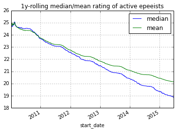 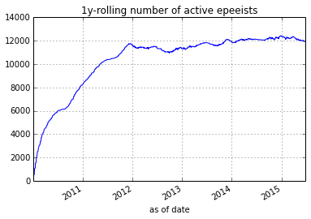One hypothesis is that experienced fencers (usually with higher ratings) retire and drop out of the active pool. However, only the difference in ratings matter when comparing two fencers. Hence, I address this drift by simply adding back a constant to every fencers' rating according to time. After adjusting for that drift, comparing two different ratings across different times becomes possible.
First, here is a distribution of letter ratings as of 2015-07-01. I filter out all fencers that have not fenced since 2014-06-20 from here on.
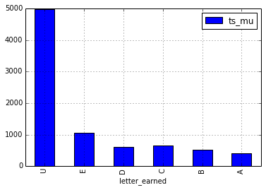 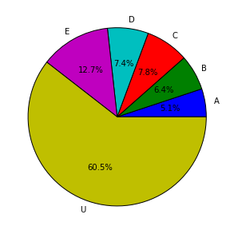Below I show how the letter rating compares to the PointControl rating. The lower and upper whiskers are the 5th and 95th percentiles, and the middle red bar is the median PointControl among all fencers with that rating. Obivously as a sanity check, the higher the letter rating the higher the PointControl. It is also interesting to quantitatively see the high unpredictability of fencing an unknown U fencer; you never know whether s/he is an A in disguise! But from this graph, that would happen much less than 5% of the time.
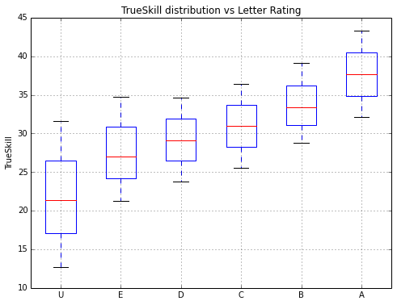Link to foil and saber distributions.
Here, I show what the PointControl rating of the fencer right after a traditional letter rating promotion. I also highlighted in green all the "one step" promotions. This also suggests that the skill gap between achieving an E>D>C>B>A gets progressively larger.
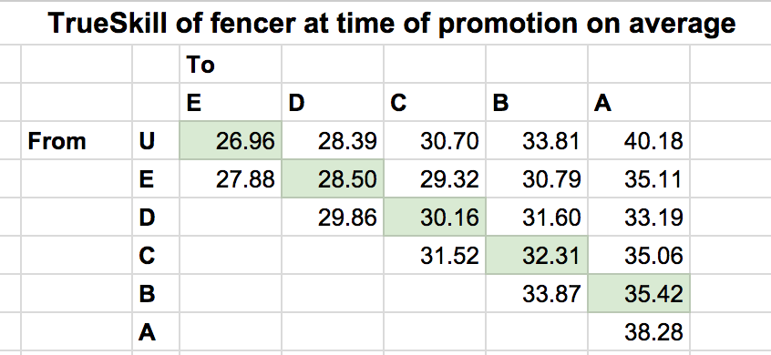 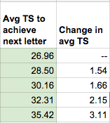Finally, we must evaluate if the PointControl rating is any better at predicting tournament outcomes than letters. Given a tournament event result ranking, I compute a Kendall Tau (specifically Tau-b to handle tied rankings) against the PointControl ranking and the letter ranking of the participants prior to the tournament. For letter-years rankings, I rank more recent years higher than earlier years. I do this for all epee events that happened between 2014-06-20 and 2015-06-31 and plot a histogram of the Tau's achieved by PointControl vs Letter.
I also replicate the effect of random seeding of fencers with the same letter-year rating (right histogram).
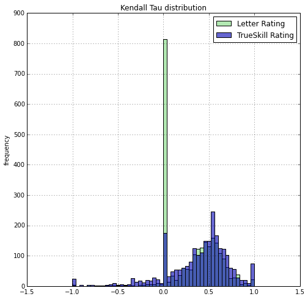 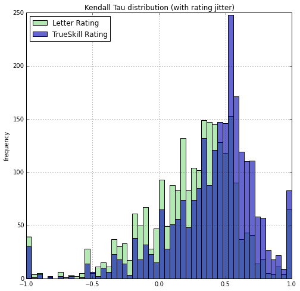A Tau of -1 signifies the predicted ranking perfectly reversed the order of the actual final ranking. A Tau of 0 signifies a ranking no better than a random ranking on average. A Tau of 1 signifies a perfect prediction of the ranking.
It turns out, there are a lot of small U-only tournaments and the letter based rating will make no prediction and the seeding will be totally random, thus leading to a zero Tau. PointControl can definitely add some predictive value here.
But what if we ignore those events, is PointControl still more predictive?
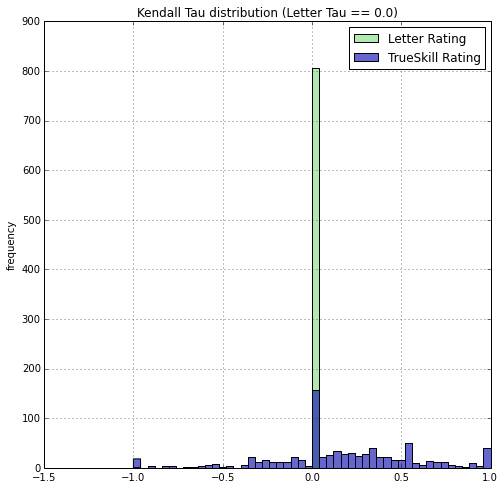 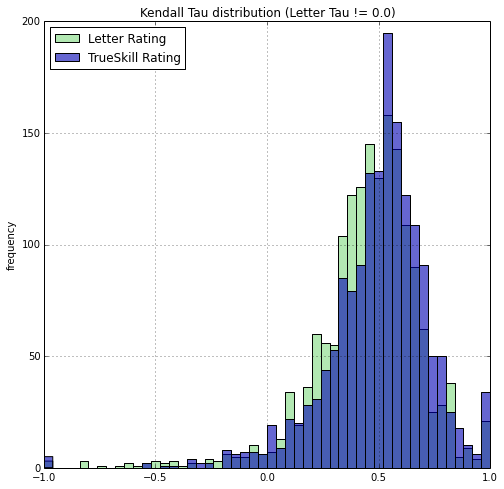The difference is small, but one can still see that the blue histogram is slightly more to the right. We can compute means, medians, and t-test. Of course, tournament events are of different size. Intuitively I should weight the prediction results of larger tournaments higher than smaller tournaments. I can weight the tournaments by the number of fencers. Or, I can weight by the minimum amount of comparisons to determine a total order, which is O(n log(n)) where n is the number of fencer. So I report the median, unweighted, n weighted, and n log(n) weighted means of the Tau's.
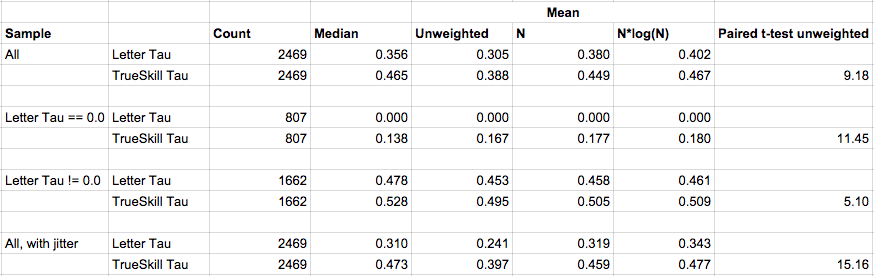SciPy doesn't seem to offer a weighted version of the paired t-test. But results are self evident enough to ommit this test.
In the end, no matter how we look at the results. It is clear that PointControl is more predictive of tournament event results than the curent Letter-based rating. I've also shown that it is possible to simply use AskFred's API to implement a historical and on-going PointControl system. Whether the USFA adopts this model or not, this new system is available for public use at PointControl.
Last updated 2015-09-15.